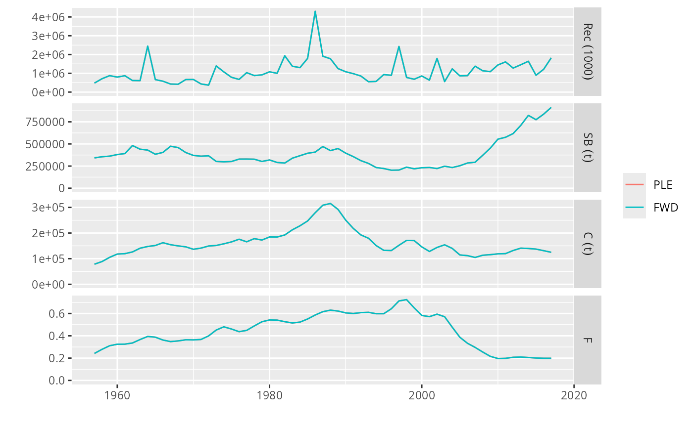

fwd() projects the fishery through time and attempts to hit the specified targets by finding the appropriate fishing effort.
# S4 method for FLBiols,FLFisheries,fwdControl
fwd(
object,
fishery,
control,
effort_max = rep(100, length(fishery)),
deviances = residuals,
residuals = lapply(lapply(object, spwn), "[<-", value = 1)
)
# S4 method for FLBiols,FLFishery,fwdControl
fwd(object, fishery, control, ...)
# S4 method for FLBiol,FLFisheries,fwdControl
fwd(object, fishery, control, deviances = "missing", ...)
# S4 method for FLBiol,FLFishery,fwdControl
fwd(
object,
fishery,
control,
deviances = residuals,
residuals = FLQuant(1, dimnames = dimnames(rec(object))),
...
)
# S4 method for FLBiol,FLFishery,missing
fwd(
object,
fishery,
...,
effort_max = 10,
deviances = residuals,
residuals = FLQuant(1, dimnames = dimnames(m(object)))
)
# S4 method for FLStock,missing,fwdControl
fwd(
object,
control,
sr,
maxF = 4,
deviances = residuals,
residuals = FLQuant(1, dimnames = dimnames(rec(object))),
effort_max = 1e+12,
...
)
# S4 method for FLStock,ANY,missing
fwd(
object,
fishery = missing,
sr,
maxF = 4,
deviances = residuals,
residuals = FLQuant(1, dimnames = dimnames(rec(object))),
...
)An FLStock, an FLBiol or an FLBiols object.
If object is an FLBiol(s), a FLFishery(ies). Else this argument is ignored.
A fwdControl object.
Sets a maximum effort limit by fishery as a multiplier over the maximum observed effort.
An FLQuant of deviances for the stock recruitment relationship (if object is an FLStock).
Old argument name for deviances, to be deleted
Stormbending.
a predictModel, FLSR or list that describes the stock recruitment relationship (if object is an FLStock). Also an FLQuant with actual recruitment values.
Maximum yearly fishing mortality, when called on an FLStock object.
Either an FLStock, or a list of FLFishery and FLBiol objects.
A projection is run on either an FLStock object (for a single species, single fishery projection), or a pair of FLBiol(s) and FLFishery(ies) objects (for more advanced mixed fisheries projections).
The projection is controlled by the fwdControl object (although it is also possible to control the projection of an FLStock using a different interface). In each timestep of the projection, the fishing effort of each FLFishery (or the equivalent F multiplier if object is an FLStock) is found so that the targets specified in the fwdControl object are hit.
For more details and examples, see the vignettes in the package and also the tutorial at: http://www.flr-project.org/doc/Forecasting_on_the_Medium_Term_for_advice_using_FLasher.html
FLComp
data(ple4)
# Hindcast with past rec and catch
hind <- fwd(ple4, sr=rec(ple4)[, ac(1980:2017)],
control=fwdControl(year=1980:2017, value=fbar(ple4)[, ac(1980:2017)],
quant="fbar"))
plot(FLStocks(PLE=ple4, FWD=hind))

#' Hindcast with past rec and catch
hind <- fwd(ple4, sr=rec(ple4)[, ac(1980:2017)],
catch=catch(ple4)[, ac(1980:2017)])